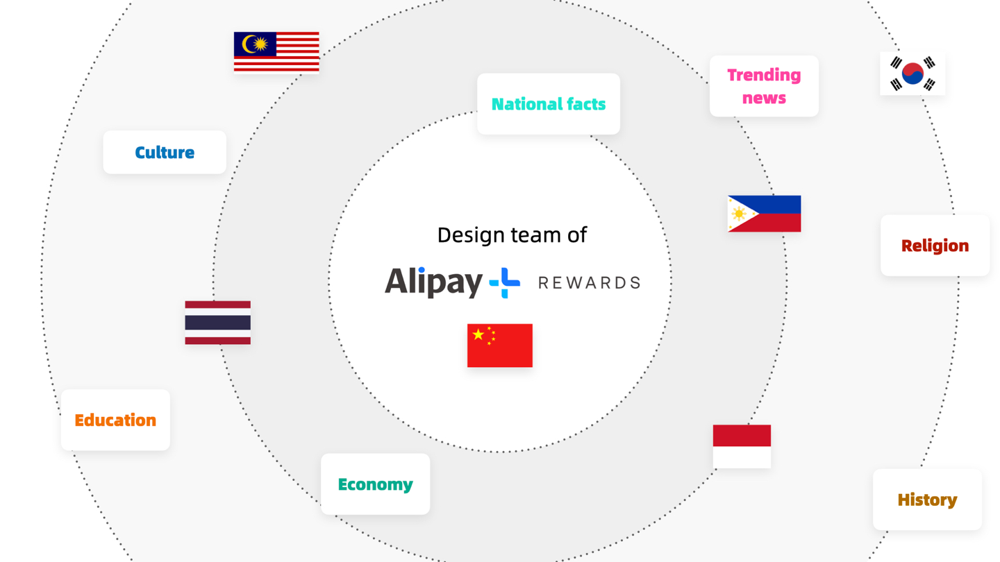
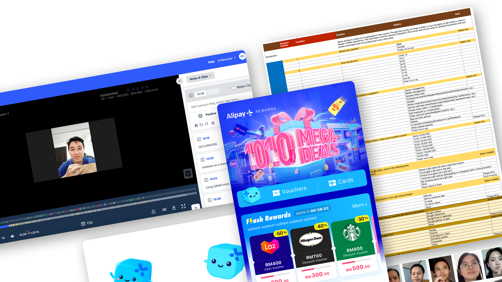

Creating a "holographic" environment for localized design during Covid
How I enabled the team to get insights and convert them into localized campaign design with all the travel restrictions.
About the project
2020 was a devastating year for most people, with the covid almost blocking normal lives of people. It was also terrible for most business, as offline transaction nearly dropped to zero during lockdowns.
Alipay+ Rewards is a sub-brand of Alipay+, a global cross-border payment solutions that not only ease transactions, but also boost and help merchants to better engage customer for sales. The goal is to quickly launch sites within each partner local ewallets and gain active users.

Problem and challenges
For a new product targeting in other countries, though there are collaboration with roles based there, the whole design team is based in Shanghai, China. No initial data, no user feedback, no updated knowledge about local users behavior, even no access to local competitors for a lack of local phone cards, and mostly importantly, no travelling to those countries during Covid for research.
It is the worst working environment I can think of for a global design team. Hiring local designers? We did not have the budget.
Approaches
My role in this project was a bit different from my previous ones, as I would be the one to oversee the design team with my previous experience and connections working on pure payment products in these countries.
Starting from breaking down all the pain points, I abstract all the elements needed for a good localized design. These elements later became my core directions to solve the problems and together they created a sort of "holographic" environment for design team to work in.
In the later stage, I managed to develop a working mode of working with local agencies in mixed mode. To help free designers to some extent, with local designers in charge of part of the design output/expressions, while design team in China act as the "brain" to input core design structures.
Results
The team successfully changed users mindset and impression of the brand by delivering an intriguing promotion service to them. In the later built NPS system, we also see a prominent rise in promoters.
Throughout 2021, we updated the home page of Alipay+ Rewards in each wallet, held a mega campaign in 11.11, and established a brand with mascot that are acknowledged by millions.
Internally, I prepared the whole team a design work structure for any kind of overseas design in the future. The connections that we used are all kept in our design library and later helped the Alipay+ project in 2022.